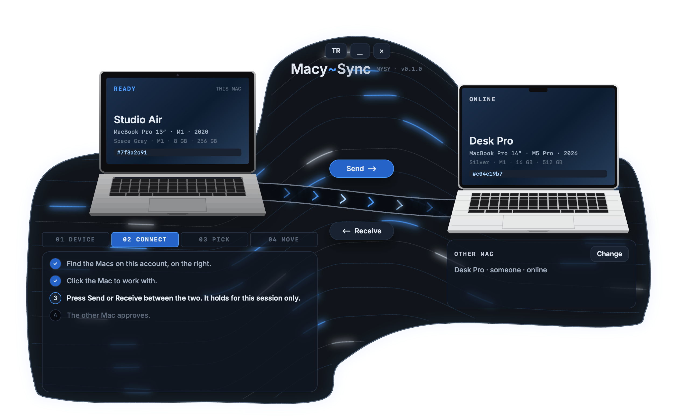

Either way, decided per session
There is no sender Mac and receiver Mac by setup. Pick the other Mac, then press Send or Receive between the two. The lines in the window always flow from the sender to the receiver, on both screens, and the choice ends with the session.

The Macs on your account
Find Macs on this account lists every Mac registered in your bus repo as a small laptop with its screen off. Point at one and its screen lights up with its name; click it and it grows into place while the others fade away.

Nothing moves without a yes
A request waits on the other Mac until its owner approves it. Each Mac has its own key pair; a request carries who asks, which way, and when.

Only what you pick, straight across
The sender scans what it can offer: apps with their settings and data, dotfiles, keys, folders, a Brewfile of what Homebrew installed. The receiver ticks what it wants and only that travels, over your network or Tailscale, in an authenticated encrypted stream. A cut connection loses only the item in flight.

An agent sets it all up
Files land in place without overwriting anything, preference files are imported, then the new Mac writes AGENTS.md and GOAL.md and starts the agent you chose. Apps tied to an identity, like Tailscale or remote desktop apps, are flagged for a fresh sign in instead of being cloned.